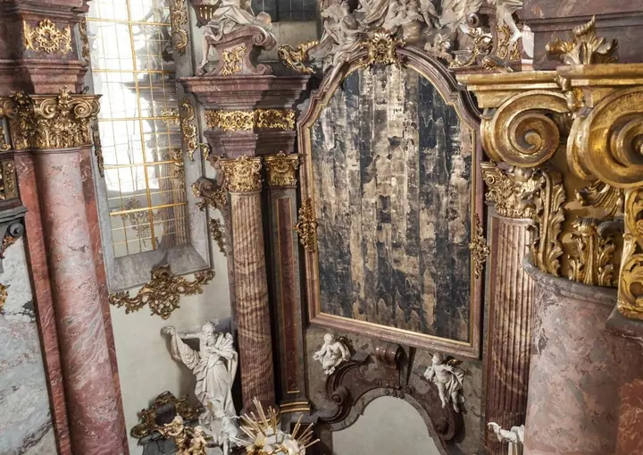
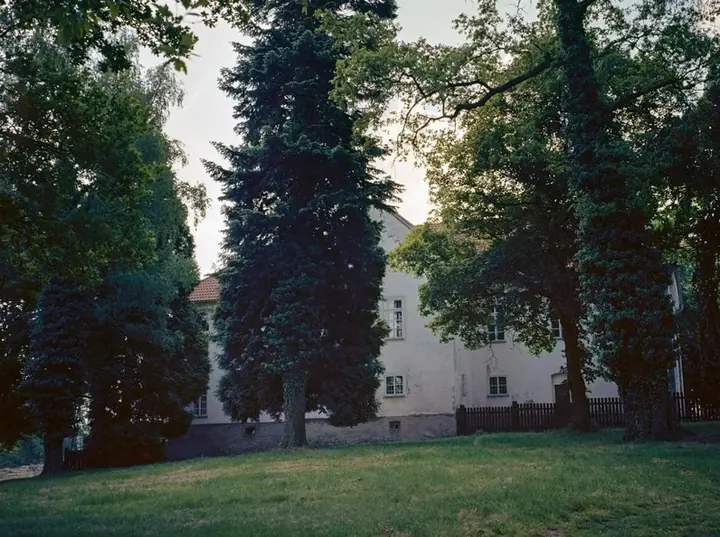

01 / 04
Fotoreprodukce pro umělce
Fotím obrazy, objekty i celé výstavy pro katalogy, portfolia a archiv. Barvy a detaily díla mají na fotce odpovídat originálu.
Zeptat se na termín→



Fotografie pro umění, architekturu a akce
Zeptat se na termín →(01) Ahoj
Jmenuji se Pavel Matoušek a jsem fotograf a výtvarný umělec z Ústí nad Labem. Fotím umělecká díla a výstavy , architekturu, produkty i reportáže z akcí . Pracuji v Praze a v Severních Čechách a domluvíme se česky i anglicky.
(02) Co fotím
01 / 04
Fotím obrazy, objekty i celé výstavy pro katalogy, portfolia a archiv. Barvy a detaily díla mají na fotce odpovídat originálu.
Zeptat se na termín→02 / 04
Fotím specializovanou architekturu, interiéry, historické prostory i produkty. Pracuji pečlivě se světlem a s perspektivou.
Zeptat se na termín→03 / 04
Fotím reportáže z akcí, koncertů, divadla a slavnostních událostí. Pracuji nenápadně a fotky odevzdávám rychle.
Zeptat se na termín→Dále nabízím
Převádím objekty a prostory do 3D pomocí fotogrammetrie. Přijímám zakázky a pomůžu vám nastavit vlastní 3D workflow.
↗(03) Portfolio
Kliknutím fotku zvětšíte · fotografie jsou ilustrační
(04) Postup
Od první zprávy po hotovou galerii.
Krok 1 z 4
Napíšete mi, co potřebujete nafotit a k čemu fotky budou. Společně ujasníme rozsah, místo a termín.
Krok 2 z 4
Podle zakázky si připravím světlo a techniku a promyslím postup, ať jde o reprodukci díla, prostor nebo akci.
Krok 3 z 4
Na místě pracuji klidně a soustředěně. U reportáží se pohybuji nenápadně, u architektury a reprodukcí dbám na přesnost.
Krok 4 z 4
Fotky pečlivě upravím a předám v dohodnutém formátu. Zakládám si na tom, abyste je měli co nejdřív.
Fotím umění, prostor i lidi v pohybu
(05) Za objektivem
Narodil jsem se v roce 1989 a vyrostl jsem na vesnici u Prahy. Odmalička mě to táhlo k přírodě a k umění. Fotografii jsem vystudoval na Fakultě umění a designu UJEP v Ústí nad Labem, kde jsem v roce 2017 získal magisterský titul. Během studia jsem byl na stážích v Portu, v Turku a na letní akademii v Salcburku.
Dnes jsem doktorandem vizuální komunikace na téže fakultě. Zkoumám, jak lidé vnímají obraz vytvořený fotogrammetrií, a chci 3D skenování přiblížit veřejnosti i institucím. Moje fotogrammetrická práce vznikla na zakázku pro CyArk nebo UNESCO. Pracoval jsem na mezinárodních dokumentárních projektech v Ladaku v Indii, v Nizozemsku a v Keni.
Jako volný fotograf žiju a pracuji v Ústí nad Labem a v Praze a jsem členem Farmstudia. Své umělecké projekty jsem vystavoval v Česku, Portugalsku, Finsku, Německu i Francii. Při zakázkách mi záleží na profesionalitě, dobré komunikaci a rychlosti.
Pavel
Pavel Matoušek · Fotograf umění, architektury a reportáží
Nejčastěji v Praze a v Severních Čechách, sám žiju v Ústí nad Labem a v Praze. Na jiném místě se můžeme domluvit.
Ano. Komunikuji česky i anglicky, takže můžu pracovat i se zahraničními umělci, galeriemi a firmami.
Pro umělce, galerie a instituce, které potřebují kvalitní fotky děl do katalogu, portfolia, na web nebo do archivu.
Ano. Fotogrammetrii se věnuji i v rámci doktorského výzkumu. Můžu pro vás objekt nebo prostor nasnímat, nebo vám poradit s nastavením vlastního 3D workflow.
(07) Kontakt
Napište pár vět o tom, co si představujete, a termín, který se vám hodí.